乃木坂choice ひめたんの番です！
朝日新聞のサイトに
飛んでみてねーよろしくねー
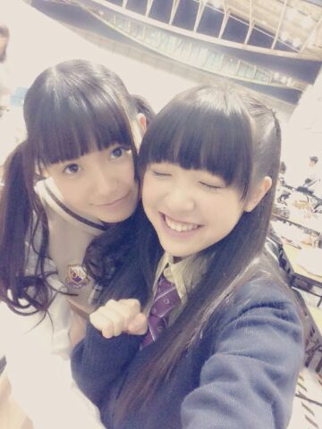
みりりん(渡辺みり愛ちゃん)かわゆすうう
ちゃっかりぎゅーしてます///
みりりんふぁんのみなさんごめんなさい
だってかーいーんだもーん∩^^∩
あすかりん(齋藤飛鳥ちゃん)とみりりん
ふたりでわちゃわちゃしてたんだけど
かわいかったよー◎
スウェットの上着を
インターネットで買ったら
どーゆー訳かXXLサイズが届いた。
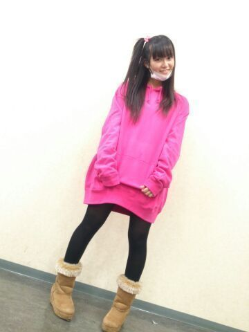
いやーなんてゆーか
ワンピースにしては肩があってなさすぎる
なんとしても着るけどさー
だって返すのもかわいそうでしょー
ひめたんってゆるキャラって感じ！って
みんなに言われたんだけど
褒めてる？ねーそれ褒めてる？
そんな私は
普段はこーゆーのあんまり
公表したくない人間なんだけど
今回は監視の目がないと
揺らいでしまいそうだから宣言しときます！
製作期間中とか密かにがんばってたんだけど
このテスト期間中に
ちょっと気が緩んでしまったので
武道館に向けてちょっと絞りたい！
ってことで断食します！
明日から！笑
多分これ読んでるメンバーのみんなは
あーひめたんまた何か言ってるよーって
思ってると思うけど
今回は がちだよー(｀・ω・´)
倒れちゃうよー
食べた分だけ動けばいいんだよー
バランスを考えれば大丈夫だよー
そんな口車には乗らーん(｀・ω・´)っつ！！！
とゆーことで応援しててね♪♪
まあ３日も続けば上出来かなー
内臓さんにも冬休みをあげないとねー
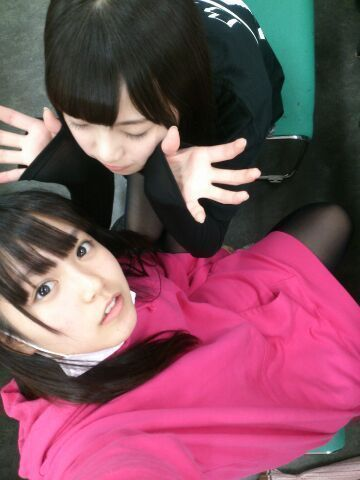
あすかりんと遊んでる図。
いつもコメントたくさん
ありがとうございます(＊´ω`＊)
最近コメント読んでたら
おにゃーのこちゃんが
ひめたん憧れるー！って///
にゃー嬉しすぎるにゃー
ありがとー///
おとこのこさんも
きゅんきゅんしたーとか
嬉しいよー///
いつもありがとーう＼(＊^^＊)／

 ひめたんは正月どう過ごす予定？
ひめたんは正月どう過ごす予定？
広島帰る？考えてなかったー(´・ω・｀)
去年はまったりおうちで過ごしたよー
あっそうそう去年は確か
寝込んでたんだーそーだったそーだった......
ひめたんビームを地面に向かってやると
ブラジルの人に届きますかー？？がんばったらいけるんじゃないかなー？
ひめたんは絶対に無理でしょうね( ^ω^ )
喉は自分で鳴らせるの？？自分の意志じゃないのよー
なんかね無意識なのよ
突然鳴ることがあるの。ごろごろにゃーにゃ
ひめたんは同姓同名に会ったことあるかな？ないですね！
まず なかもとさん にあんまり出会わないですね
ひめかちゃん はたまに遭遇するけどね
駐車場で幼いひめかちゃんが
えんえん泣いてて
ひめちゃーん泣かないでーって
ままさんがおだててる場面に出くわしたり
しますけどねー
最近、ひめたんブログにはまりすぎてて
よく寝坊するんだけど、どうしてくれるの！？それはまーじで謝ります。
まーじごめんなさい(´・ω・｀)
ただね、許すよ！
寝坊してもしゃーない！ひめたんが許す！
ひめたんは冬の食べ物の中で何食べたいー？お鍋すきー＊
おともだちみんなでお鍋を囲んで
お鍋パーティーとか憧れます///
ひめたん普段のメンバーへの呼び方は
どう呼んでいる？真夏、いこたん・生駒ちゃん、いくちゃん、
れなりん、ねねころ、万理華、さゆにゃん、
みさみさ・みさ先輩、川後さん、ろってぃー、
あしゅ・あすかりん、ゆったん、るんるん、
玲香、まいやん、ずーさん、かなりん、
らりん、ななせまる、愛未、ななみん、
せいたん、ちま、まいまい、みなみ、
まっちゅん・りんご、とまと、若月、まあや
現１期生だとこんな感じ( ^O^ )
こうしてみると公式のニックネームじゃない子も
ちらほら。
ひめたんは何の鍋が好きですか？？？最近はあっさりしたのが
食べたい気分です♪
水炊きとか美味しいよねー
カレーチーズ鍋とかゆーのもめっちゃ美味しいよ
超絶こってりしてるよー
目玉焼きにひめたんビームは、合いますか？たったべないでー(´；ω；｀)おろろ
 ひめたんは寝たいのに
ひめたんは寝たいのに
どうしても寝れないときどうしてる？ちょっと前そうだったなー
辛いよねー
ひめたんは携帯つつきながら音楽聴いてたよー
そんで「あー目が痛いー」ってなって
携帯置いた瞬間に寝落ち、みたいな。
ひめたんのブログの
コメント欄下２ケタに46を踏んだ方へ
手書きでコメ返するコーナー
＼ ひめたん46 ／
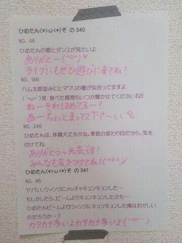
ごーめん文字ぴんくだから
読みにくいかも←
ひなちま(樋口日奈ちゃん)は
ラムネがだいすきなんだと。
あっ飲むやつじゃなくて食べるやつね。
(＊´・ω・＊)
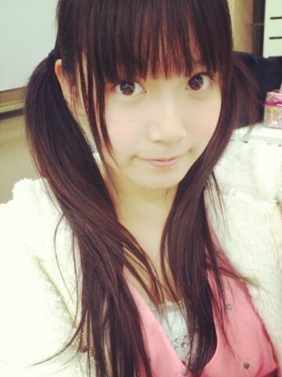
自メイクが様になってきたと
最近おねーさんたちが褒めてくれる(＊^O^＊)
ヘアはなんか微妙、だって？
しゃーないねんそれレッスン直後やねん
最近はひめたん結び＜ツインやねん
でもツイン辞めてストレートにしたらー？とも
よく言われる...そんなー......
今回は書くことがいぱーいあるぞー
まずは横浜全国握手会
ありがとうございました( ^O^ )
聞くところによると
朝早くからたくさんの方が
待っていてくださったと聞いて......
風邪とか引いてないですかー？
本当に無理はしないでね(´；；｀)
それだけ楽しみにしてくれてたんだよね
ありがとうございましたっ
私たち期待に応えるライブできてたかなー
ひめたんが歌ったのは
◎バレッタ
◎やさしさとは
◎月の大きさ
◎そんなバカな・・・
そうなんですーなんと
参加楽曲全部披露させていただきましたのです！
「やさしさとは」「そんなバカな・・・」は
パフォーマンス初披露でしたが
いかがでしたかー( ^ω^ )？
「やさしさとは」は
良い曲！って思ってもらいたくて
たくさん練習しました
やっぱりユニット曲ってのは
自分にとってかわいい存在なので。
「そんなバカな・・・」は
ダンスやばい激しいです！
みんなが筋肉痛ーて言ってたのはこれです！
MVの世界観そのまんまなのー♪
いやー踊ってて楽しいですよー
そして握手会は
ななみん(橋本奈々未ちゃん)と
ペアでしたっ
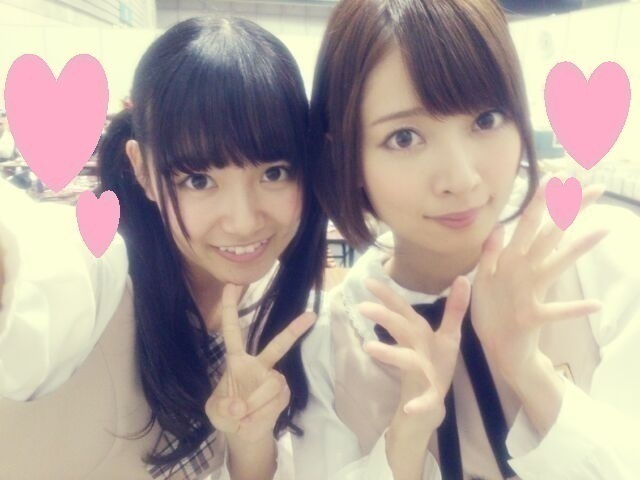
ななみん(´_ゝ｀)
ななみんファンのみなさん
仲良くしてくださって
ありがとうございました！
やさしい方ばっかりで
終始ほのぼのレーンだった(´_ゝ｀)＊
ななみんびーむ かわいかったー！
そしてひめきゅんさん
ありがとうございました！
はじめましての方もたくさんいたみたい
会いに来てくれて
本当に嬉しいよー♪♪
お久しぶりのみなさんお待たせしましたねー
いつもありがとうっ
初選抜おめでとーって
たくさんお祝いしてもらえて
間近でありがとうって伝えられてよかった！
雑誌みたよー
ナタリーみたよーとか
乃木どこみたよーとか
乃木どこのバスケは大丈夫かーとか(笑)
見た通り元気です(〃ω〃)/
そして昨日はさらに
トレカのバインダーお渡し会
15レーンで
ななせまる(西野七瀬ちゃん)と
お渡ししました
ななせまるありがとー♪
15レーンのみなさん
ありがとうございました( ´ ▽ ` )
そんな感じで昨日は
結構な長丁場でございました
会場来てくださったみなさんお疲れさまでした！
せっかくの日曜日なのに
リフレッシュするどころか
ハードな１日にさせてしまった(´・ω・｀)
でも乃木充できたよねっ
お勤めのみなさんも学生さんも
今朝はちゃんと起きれたかしらー？
さらに乃木どこは
2013年反省会でした*\(^o^)/*
観てくださったみなさんありがとー！
ひとつ言わせてください！
今だからいえるけど
階段から落下したのはまーじで痛かったの！
なんかVTR観たら
そーでもなさそうだけどさ！
まあステージにいる以上
うずくまるわけにもいかないので
痛そうに見えないほうがいいのかなー
いくちゃん(生田絵梨花ちゃん)との
お泊り会は前にブログで書いたけど
そーゆー経緯があったのねー
中３組エピソードが話せて
いやー良かった良かった(｀・ω・´)
ちなみにるんるん(斎藤ちはるちゃん)は
次の日に予定があったから
今回は来れなかったんだよねー
次は３人でお泊りしようねっ
いやあ。今日は記事が長い。
ここまで読んでて疲れたよねー
もうちょっとだけ付き合ってってー(´ω`)
最後にお知らせ◎
乃木坂ちゃん初の
LIVE DVDが発売されることになりました！
2013/2/22に
幕張メッセイベントホールで行われた
デビュー一周年ライブが収録されています
忘れもしない制服のマネキン......
ぜひチェックしてみてください☆

 マックで一番好きなハンバーガーは何ですか？？
マックで一番好きなハンバーガーは何ですか？？チーズバーガー＊
歴代の制服の中で1番好きなのはどれ？？7thの制服ー！
かわいいー((o(。・ω・。)o))
1stの制服もなかなか。
ひめたんが乃奇坂女子学園に転校したとしたら、
超体育会系のアイドル部に入る？
それとも先生オヌヌメの茶道部に入る？アイドル部楽しそうだよねー♪♪
茶道部は正座ができないから
きっと努まらない......
サンタって煙突のない家の場合
どこから入るんですかね？ぴんぽーんって入るんじゃない？
いやよく知らんけどさー
一軒家さんのお宅なら穴掘ったりね！
いつもコメントたくさん
ありがとうございますっ
マフラーの巻き方は
いろいろ教えてくださったから
ちょっと試してみるねー♪♪
次回はひめたん46やるね！
◎12/9 Sound Room 23時59分~
ぜひチェックしてくださいっ
(＊´・ω・＊)
テスト終わりました∩^^∩ばほーい
今日から日記も通常営業じゃーい！
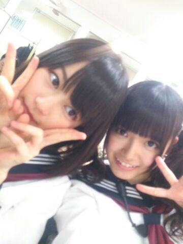
ブレブレいくちゃん。とひめたん。
12/6発売 GiRLPOP 2014 WINTER
みおちゃん、みさみさ、川後さんと
４人で載ってます＊
写真もインタビューもあって
楽しい感じになってますよー
ぜひチェックしてみてくださーい♪♪
さて、明日から
7thシングル全国握手会が始まります！
一カ月半ぶりの握手会とゆーことで
ロックの学園以来のライブとゆーことで
ひめたんはもう楽しみにしてました*\(^o^)/*
ライブ初披露の曲いっぱいあるので
はやくパフォーマンスしたいなー
あっ会場はきっと寒いと思うから
防寒対策はバッチリしてきてねー
とにかく風邪ひいたーとかゆー
悲しいことにはならんよう頼みます
ひめたん泣くよーこれまじだよー
そんなひめたんは
マフラーのいい感じの巻き方を
研究したい年頃です
最近やってるのは
ぐるぐる巻きつけない！
ラフに首にかけるだけって感じです
様になってるかどうかはわからぬ(〃ω〃)
例年よくやるのはそのままりぼん結びかな
何かステキなのがあったら
ぜひひめたんに教えてくださーい♪♪
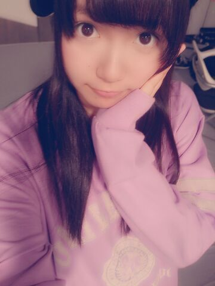
生写真「スウェット」
万理華、ねねころ、玲香と
お話しながら帰ったんだが
まー楽しかった( ´ ▽ ` )ノ♪

 個人ＰＶの予告見たよー！
個人ＰＶの予告見たよー！
もしかしてひめたんは鳥になったのかな？笑鳥さんにはなれなかったかなー(´・ω・｀)
でもねっでもでも飛行機なんかよりも
パラグライダーの方が
感覚は近いかも！
空を飛べたなら次は
バンジージャンプも出来るね笑
やっぱり怖さとか全然違うのかな？うちにはバンジージャンプのプロがいるので
バンジーの依頼は譲ります←
えってかっパラグライダーはっ
まず怖くないっ怖くないよ！
高いの平気なん？高所恐怖症とかゆーわけではないけど
さすがにあの絶壁に立ったときは
ちょっと足がすくみました。
んーまあー何より安全だからね( ∀ )
今年は
インフルエンザの予防接種打ちましたか？打ちました◎
ひめたん注射は意外と怖くないタイプの人よー
これで安心してライブリハも練習できるねー
みなさんも打ってね？
インフルかかったらつらたんだよー？
武道館のモバイル会員の先行の抽選
落ちたんだけど、
ひめたんビームでなんとかできないかな？ひめたんびーむでどうにかなったら
その抽選はきっとあかんやつや。
でも、ほら、そのーね、
ひめたんびーむってやってみて？
ちょっと元気になれるでしょ？
なったでしょ( ^ω^ )あん？
 くわいの時期だね！くわいは好き？
くわいの時期だね！くわいは好き？くわい好きー＊
くわいのからあげってやつが
給食に出てきてましたよー懐かしやー
コーヒー飲むなら
ブラックor砂糖のみorミルクのみ
or砂糖とミルク両方のどれ！？砂糖とミルク両方あっても足んないよー
まず牛乳と1:1で割って
カフェオレにしないと話になりません
なぜならひめたん苦いのは苦手だから！
テストの結果が悪かった時は
ひめたんはどーしますか？高らかに笑ってやりましょうふっははは*\(^o^)/*
今年中にメンバーと
やっておきたいことってある？遊びに行く約束をしたまま
行けてないメンバーがちらほら......
ちなみに今日はみおちゃんと
レッスン着用にパーカー買い行こうって話した！
万理華が言っておりました
日芽香が描く動物の絵の共通点は
目と目の間隔が近い、と。
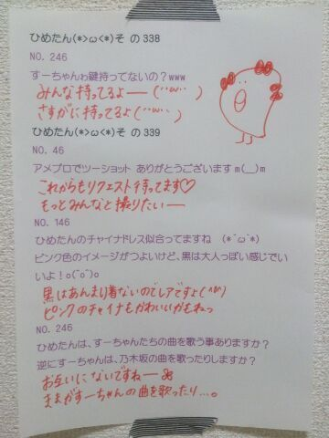
明日は第３レーンで待ってます！
乃木どこも観てね！2013年の反省会だよー！
(＊´・ω・＊)
＼ にゃんにゃんさゆにゃん ／
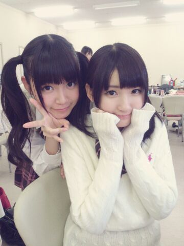
昨日はFNS歌謡祭に
出演させていただきました！
観てくださった方ありがとう(＊^O^＊)
ひめたんははじめての出演ということで
ほんとに嬉しかったなー＊
たくさんのアーティストさんたちの
パフォーマンスを間近で感じることができて
夢のような時間でしたっ
郷ひろみさん、ゆずさん、松本伊代さん
共演者の皆様、そしてスタッフの皆様
ありがとうございました！
今週の全握は第３レーンで
ななみん(橋本奈々未ちゃん)とペア
ななみんと組むのは初めて∩^^∩
ななみんよろしくね＊
ななみんファンのみなさんよろしくお願いします＊
そしてひめきゅんさんよろしくねーっ
ひめたん大図鑑とは何か。それは、いわゆる
「過去の質問返しをまとめたもの」って
感じかな
今回も2012年5月の記事のもの。
１年半か......通りで解答が幼いわけだ。

1212 キス魔で最近有名なせいらりんにチューされたことある?
キス魔で最近有名なせいらりんにチューされたことある?ひめたんはなーいよ☆
ひめたんのちゅーしちゃうぞっはみんなのものわら
1213こどもの日わ何した〜?(*^_^*)久しぶりに地元の子とメールしたり
たこやき器にホットケーキミックス入れてみたり
あれーこどもの日らしいことやってない!わら
1214仕事忙しいと思うけど、高校では部活に入る予定はある?
1215高校では部活やるの???検討なーう(>_<)
1216高校生になったら赤点と言うものがあって進級に関わると言うことなんですがそこら辺についてどう思いますか??それなっ
もう不安ですよ。ひめたん自信なーい。
中元さんはテスト前に死にそうになって詰める人だから多分どーにかなる♪わら
1217クラスの人たちはひめたんがアイドルってこと知ってるの?
1218高校では乃木坂だって言ってるの?
1219クラスの同級生に「乃木坂46のひめたん?」って聞かれなかった?
1220高校のクラスメイトはひめたんが乃木坂のメンバーってみんな知ってるの?? ってかひめたんが先に言ったの?わからんけど知っとると思いますよ(^ω^)
ひめたんからはそりゃ言いませんよ。噂ってのはすごいんだからっ!
でも、みんなアイドルでなく「クラスメートの中元さん」として仲良くしてくれてるから居心地がいいの♪
アイドル?ねえアイドルなの???みたいな感じにはならなーい!
1221日芽香ちゃんの通う高校には食堂などはありますか?ありますよん(ω)でもまだ行ったことなーい!
1222ひめたんから見てかわいい、乃木坂に入れそうな女の子はいましたか?それが冗談抜きで、まじで!かわいい子めーっちゃ多いの!
乃木坂でも学校でも周りかわいい子しかいないみたいな幸せな環境です♪
1223友達何人できましたか??1、2、3、...何人じゃろ。
とりあえずクラスの子はみーんな仲良くしてくれるから友達ってことで。
他のクラスの子もあわせたら50人はいくんじゃないでしょーうか!100人まであとはんぶーん☆
1224高校でがんばりたい科目って、特にある?全部っちゃ全部じゃけど、やっぱり苦手なやつ頑張らんといけんよねー...
数学、あと物理生物、体育!
1225早くもクラスのアイドルになったのかな?んなことないなーい
1226
ひめたんのクラスは係とか委員会はきまったのかな(・x・。)?決まった＼(^O^)／
今回は委員会ならんかったけど、係でクラスに貢献しますっ
1227高校のいいとこは?みんな個性が光ってて、でもやるときはやる!みたいか子が多いとこ(*^^*)
ねー素敵でしょ☆?
明日でテスト終わりだー♪♪
(＊´・ω・＊)
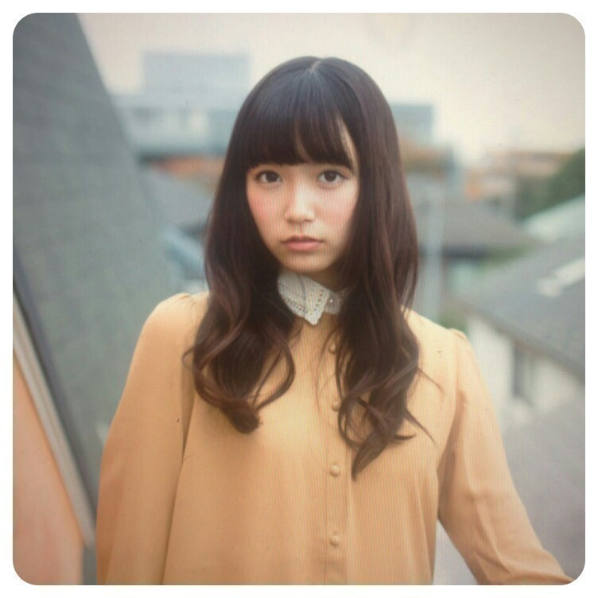
Rの法則観てくださったかなー？
代々木ライブの裏側や
キャッチフレーズ発表に心理テスト
さらにスタジオライブ２曲という
盛りだくさんの内容でした＊
ひめたんは「天然？」だそう(＊^O^＊)
せりぃなさん
ありがとうございましたっ
バレッタフルは初披露でした！
そうそう昨日のブログで
すっかり書くの忘れてたけども
「月の大きさ」パフォーマンス解禁♪
バレッタとは雰囲気がまた違って
乃木坂ちゃんパキパキ踊ります！かっこよく！
ライブで踊るの楽しみだな＼( ^O^ )／
ひめたん大図鑑は楽しんでいただけてますか？
今回やるかやらないか結構考えたんだけど
コメント読んでたら
大図鑑待ってたよ！って声がたくさんあって
ほっとしました( ω )
新しい質問が載せられないってなると
ちょっと楽しくないかなーと思って
そのぶんが補......えるかわかんないけど
大図鑑はできるだけたくさん更新しようって
スタンスでやっております
ちょっと忙しくしてしまうかもだけど
みなさんもお勉強の合間とかお仕事の合間とかに
気軽に読んでねっ
あっコメントは
お勉強に行き詰まった時に読んで
元気になります( ^ω^ )いつもありがとー
ひめたんテスト中らしいから控えようかな...
って気を遣ってくださる方も
いらっしゃるみたいだけど
全然だよーむしろ楽しみだよ♪
ひめたん大図鑑とは何か。それは、いわゆる
「過去の質問返しをまとめたもの」って
感じかな
今回も2012年5月の記事のもの。
１年半か......通りで解答が幼いわけだ。

1199乃木坂に入る前は、ＧＷどこに行ってたの?
フラワーフェスティバル!
広島の子はＧＷと言えばフラワーですよ(^ω^)
毎年５月３日〜５日に広島の中心にある平和大通りってところでお祭りやってるのよー
たーくさんのきれいなお花が並んだり毎年フラワーゲストの方が来てくれたり。ちなみに去年はPerfumeさんとか!
それからスクール生としてステージに立ったりもしたかなー♪
とにかく楽しいお祭りです(*^^*)
1200どんなシュシュが好きですか?
前はふわっふわのもっこもこが好きだったけどねー最近はもっぱらフリっフリが好き!
なんてゆーかー、ちょっとゴージャスな雰囲気をも醸し出すような。ね?
伝わるかな(^ω^)やたら擬音語多いけど☆
1201いつも仕事とかが影で目立たないひとってどうですか?
目立つ仕事がすべてじゃない。
最近よく思うのは、例えば握手会ひとつとっても
ステージをセッティングしてくださる人がいて、
スケジュールを調整してくださる人がいて、
わたしたちを群馬まで運んでくださる人たちがいて、
マイク用意してくださって、お水用意してくださって
そして一緒に頑張るメンバーがいて、会いにきてくださるみなさんがいて
はじめて握手会が成り立つわけですよ。
逆に、誰かひとりでも欠けたら成功には至らないわけですよ。
って考えたら、この世にむだな仕事はひとつもないと思いませんか?
1202生駒ちゃんの水玉模様ＭＶみたよ♪日芽香ちゃんのことだよね?
ひめたんも見ました!めっちゃかわいーい(*/ω＼*)
16歳だもんね。ひめたんも歌えるもんね。
じゃあひめたん勝手に自分と重ねて歌ってみよっかな。
大人の気持ちはずっとわからないよ16歳。
おおーぴったりやんけ☆
1203おいシャンの振り付けが変わったみたいだね。ひめたん的には前の振り付けどう思った?
前の振り付けもキュートで好きだったよー(^^)
でも新しいバージョンもみなさんに披露するその日までお楽しみにー!
1204おいシャンの衣装ひめたんはどう思ってる?ぐるカーとどっちが好き??
ぐるカーもおいシャンも、スカート長いよね。
ひめたん個人的な話になっちゃうけど、中学生時代の名残で膝下スカート好きなんです(//ω//)てへぺろ
だって、なんか落ち着くんじゃもーん!
芋っ子ひめたんわら。
1205どのメンバーと仲良いの?さゆりんとかは??
1206一番仲がいいのは誰?
さゆりんご(松村沙友理chan)仲良くしてもらってますよ(*^^*)
みんな仲良いから、答えにちょい困ったりするのだけれどもー。
やっぱり旧中3組のいくちゃん(生田絵梨花chan)るんるん(斎藤ちはるchan)はいっつも一緒におるかな。
え?そろそろ「高1」って言いなさいよって?
まだまだ認めたくないんです(^ω^)わら
1207推しメンは誰?
1208乃木坂の推しは?(^-^)
かずみさーん(高山一実chan)とは相思相愛っ
1209乃木メンの中で恋人にするとしたら誰?
彼女さんならまりか(伊藤万理華chan)、
彼氏さんならみゅみゅ(若月佑美chan)わら。
1210乃木坂の中で一番みんなをまとめれてしっかりしてる人ってひめたん的に誰?
やっぱりれーか(桜井玲香chan)キャプテンではないでしょうか(^-^)
1211ねねころちゃんのブログにひめたんにみつめられたらって書いてあったけど...実際のところどうなの?ひめたんからみてねねころちゃんは
ねねころ(伊藤寧々chan)かわいいーすきーっ(*^^*)
誰かと目があったら、そのままガンみするのよひめたん。
あっちが照れて目え反らすまで。ひめたんぽりしーです。
それではFNS歌謡祭がんばります＊
(＊´・ω・＊)